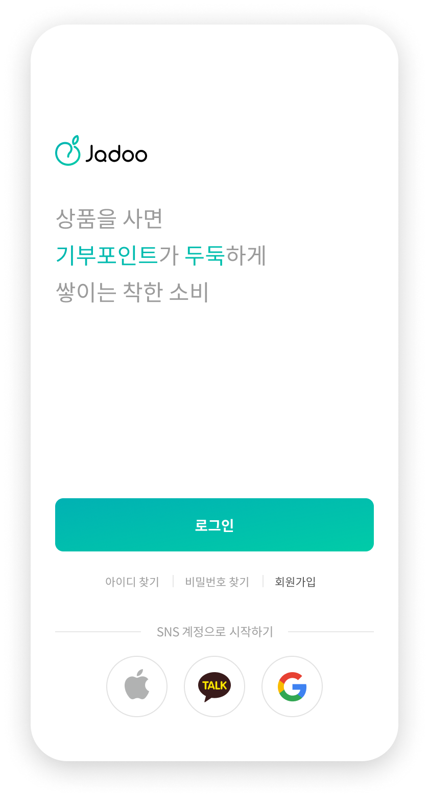

착한 소비
자두
KEYWORD
ABOUT
INFORMATION
Discovery
우리의 도움이 필요한 곳이 있습니다
수도권 주거빈곤아동
61.6 %
한 해 안락사 되는유기동물
27,300 마리
5년 간 고독사 독거노인
5480 명

Campain
일상의 기부를 만들어 가는 곳
앱을 사용하며 아동, 노인, 동물, 자연 등
평소 관심있던 문제 해결에 도움을 줄 수 있습니다.
How to Use
자두 기부 어떻게 사용할까요
-
컨텐츠
CONTENTS
-
캠페인
CAMPAIGN
-
협력
CONNECTION
Design
Overview
어플의 첫 얼굴, 온보딩 페이지
어플을 처음 실행하면 보이는 화면은 사용자 경험에 큰 영향을 미칩니다.
어플의 메인 콘텐츠를 간결하게 표현하였습니다.


가입절차 까다롭지 않게
사용자가 가입 완료까지 쉽게 따라올 수 있게 모든 절차를
한 스텝씩 나누었습니다.



메인
모은 포인트를 사용해 관심 캠페인에 기부할 수 있습니다.
메인에서 바로 관심 있는 프로젝트에 기부할 수 있도록 CTA 버튼을 배치하였습니다.

진행중인 프로젝트의 마감기한을 카운트다운하여 사용자들의 참여율을 높입니다.
네비게이션 버튼은 메인을 기준으로 포인트를 적립할 수 있는 ‘재배' 페이지와 포인트를 사용할 수 있는 ‘수확' 페이지로 나누었습니다.
포인트 재배 페이지
자두 자체 제작 상품 및 각종 컨텐츠를 통해 포인트를 획득할 수 있습니다.

포인트 수확 페이지
모은 포인트를 사용해 관심 캠페인에 기부할 수 있습니다.
Brand Logo
친근하고 부드러운 이미지를 위해 둥근 형태를 그대로 살려
로고와 텍스트 로고를 디자인하였습니다.
JADOO
FRIENDS
포인트 등급을 캐릭터로 표현하여 사용자들이 컨텐츠를 더욱 친근하게 느낄 수 있도록 기획하였습니다.
자두 캐릭터는 당도에 따라 4가지 단계로 나뉩니다.
-
1
두두
[Dudu]
해맑은 아기 자두 -
2
프루니
[Pruny]
인기쟁이 해외파 자두 -
3
벤
[Ven]
질풍노도 청소년 자두 -
4
네타
[Neta]
복숭아가 되고 싶은 자두
illust 1
자두 캐릭터를 활용한 일러스트
illust 2
자두 캐릭터를 활용한 스타일 바리에이션 일러스트